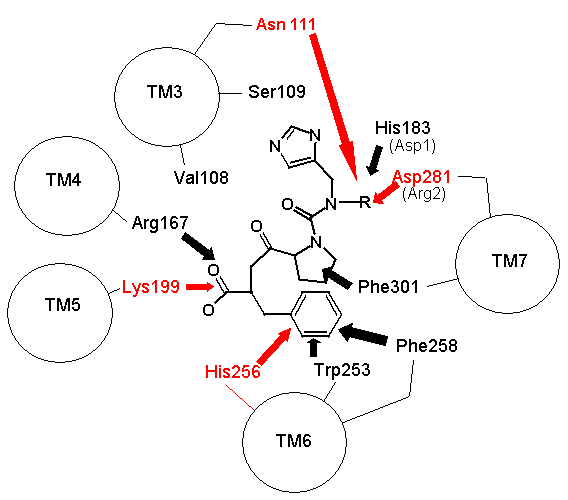
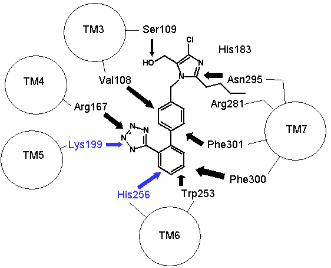
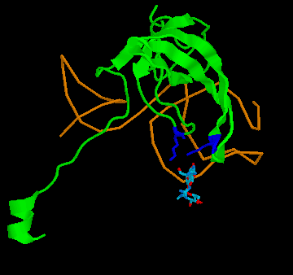
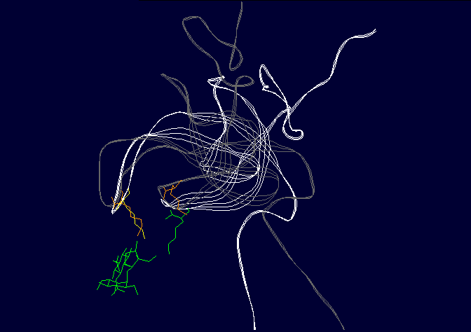

Einführung
Dr. Lee Spetner ist ein Informationstheoretiker, der ein Buch verfasst hat, in dem behauptet wird, dass zufällige Mutationen die Art von „informationellen" Veränderungen in der Biologie nicht hervorrufen können, die der Evolution (1) angeblich erforderlich sind. Es ist interessant, dass in einem Buch, das angeblich über Informationstheorie handelt, die klassische Formulierung der Informationstheorie von Shannon und Weaver (2) nicht erwähnt wird. Spetners Vorstellung von Information in der Biologie wurde von mehreren Gruppen von Evolution-Leugnern aufgegriffen, und während andere spezifische Kritiken seiner Arbeit produziert haben (3,4), gibt es keine umfassende allgemeine Analyse seiner Argumente.
In dieser Rezension werde ich untersuchen, ob Spetners Metriken gültig auf die Biologie angewendet werden können, und wie Spetner sie tatsächlich auf reale Beispiele anwendet. Obwohl seine Argumente auf den ersten Blick plausibel erscheinen, zeigt eine genauere Betrachtung mit etwas Wissen über Biochemie signifikante Mängel. Ich werde zunächst kurz Spetners Informationsmetrik beschreiben, dann darlegen, dass 1) Spetners Metriken von einem Bindungsmechanismus abhängen, der in der Natur nicht vorkommt, 2) dass Spetners Metriken verlangen, dass Substanzen Enzyme in einem „alles oder nichts"-Modus binden, während reale Substrate nicht auf diese Weise binden. Darüber hinaus werde ich zeigen, dass Spetner selbst bei der Anwendung seiner Metriken inkonsistent ist. In seinem Xylitol-Beispiel verwendet er tatsächlich nicht das Maß, das er entwickelt hat, und im Streptomycin-Beispiel wechselt er zu einer anderen Metrik, obwohl seine ursprüngliche Metrik eine erhöhte Information zeigen würde. Schließlich werde ich zeigen, dass sein Modell der „gerichteten Evolution" auf einem Missverständnis einer Form der zufälligen Mutation beruht.
- Übersicht über Spetners Metriken
- Anwendung auf reale biologische Systeme:
- Spetners Beispiele
- Spetner und „gerichtete" Mutation
- Fazit
- Literatur
Wörterbuch |
| aktive Stelle: eine
Ligand-Bindungsstelle (meist eine Falte oder
Spalte in der Struktur eines Enzyms), an der chemische Reaktionen
stattfinden. Aminosäure: ein kleines organisches Molekül, das als Baustein für Peptide oder Proteine verwendet wird. Angström: eine sehr kleine Distanz; 10-10 Meter. Enzym: ein katalytisches Protein, das eine chemische Modifikation eines Substrats durchführt, das an seine aktive Stelle bindet. Ligand: jedes Molekül, das an eine spezifische Bindungsstelle an einem Enzym oder Rezeptor bindet. Peptid: ein organisches Molekül, das aus Ketten von Aminosäuren besteht. Proteine sind lange Peptide. Protein: ein großes organisches Molekül, das aus Ketten von Aminosäuren besteht. Rezeptor: ein Protein, das bindet Liganden, die Hormone oder Neurotransmitter sind. Die Bindung des Hormons führt zur Aktivierung einer enzymatischen Signalweg, aber das Hormon selbst wird nicht chemisch modifiziert (im Gegensatz zu einem Substrat). Substrat: ein Ligand-Molekül, das an ein Enzym aktive Stelle bindet und vom Enzym chemisch modifiziert wird. |
Übersicht über Spetners Metriken
Klassische Informationstheorien wie Shannons Informationstheorie wurden von mehreren Autoren auf die Biologie angewendet. Diejenigen, die sich mit Evolution befasst haben, haben zu dem Schluss gekommen, dass Evolution unter geeigneten Umständen "Information" im Sinne von Shannon erhöhen kann (siehe z.B. 13). Dr. Spetner behauptet jedoch, dass zufällige Mutationen "Information" nicht erhöhen können. In seiner Behauptung verwendet Spetner zwei separate Informationsmaße. Eines ist ein "Erwartungswert"-Maß, wonach eine Menge verschiedener Zeichenketten weniger Information aufweist als eine Menge identischer Zeichenketten. Dies wird Menschen überraschen, die sich mit standardmäßiger Shannon-Weaver-Information oder Algorithmischer Information auskennen, ist aber unter bestimmten Umständen eine gültige Formulierung. Ich werde dies nicht im Detail behandeln, da Spetner selbst dies auch nicht tut.
Er verwendet auch eine „Adressierungs"-Maßnahme für Information. Dies ist
relativ einfach zu verstehen.
"Brisbane" enthält weniger Information als
"Cannon Hill, Brisbane", welches weniger Information enthält als
"Richmond Road, Cannon Hill, Brisbane", welches weniger Information
enthält als
"666, Richmond Road, Cannon Hill, Brisbane"
Es gibt einen formalen Weg, dies mit binären Adressen für Matrixelemente in n x n (oder n x n x n) Matrizen zu tun. Es ist etwas gewagt, dies auf Substratbindung zu übertragen, aber es ist nichts grundsätzlich Verrückteres daran als die Zuordnung von Telegraphie-Übertragung zur DNA-Replikation. Ein Schlüsselfeature dieses Maßes ist, dass „Information" direkt mit der Stringlänge zusammenhängt. Das heißt, ein längerer String enthält mehr Information sowohl in der „Wort-Enzym"-Formulierung (siehe unten) als auch in der binären Adressierungsformulierung. Ein weiteres wichtiges Feature ist, dass die Bindung „alles oder nichts" ist. Ich bespreche die Implikationen davon im Detail in Spetners Wort-Enzym-Beispiel.
Enzym-Substrat-Bindung und Spetners Spezifität
Enzyme sind Protein-Katalysatoren, die chemische Reaktionen an den Verbindungen fördern, die an sie binden (ihre Substrate). Da Enzyme nur sehr stark an eine sehr kleine Anzahl von Chemikalien aus der Vielzahl in ihrer Umgebung binden, gelten sie als hochspezifisch. Spetner behauptet, dass Enzimspezifität analog zur Adressspezifität ist und dass Enzyme mit vielen Substraten weniger Information aufweisen als Enzyme mit nur einem Substrat. In seiner Erklärung verwendet er ein Gedankenexperiment mit einem „Wort-Enzym" statt eines realen Beispiels, und wir werden dieses Argument später im Detail untersuchen. Doch auf den ersten Blick scheint es ein vernünftiges Argument zu sein. Die Bindung von Enzym-Substrat (oder Hormon-Rezeptor) wird einem „Schloss-und-Schlüssel"-Mechanismus gleichgesetzt, wobei das Substrat der Schlüssel und das Enzym das Schloss ist. (Wichtiger Hinweis: sowohl das Schloss als auch der Schlüssel sind „flexibel", da Enzyme und ihre Substrate eine gewisse Flexibilität aufweisen).
Spetners Bindungsspezifität ist nicht nur eine
Eigenschaft von Enzymen
Beachten Sie, dass Spetners Argument ein allgemeines ist und nicht nur auf Enzyme, sondern auf jedes spezifische Bindungssystem zutrifft, wie z. B. Hormon-/Rezeptor-Interaktionen, Bindungen zwischen Zytoskelett-Elementen usw., unabhängig davon, ob das Substrat enzymatisch umgesetzt wird. In der folgenden Diskussion werde ich den Begriff „Ligand" verwenden, der alles umfasst, was sich spezifisch an einer Akzeptorstelle bindet, einschließlich Substrate.
Beachten Sie ferner, dass sich das Argument subtil verschiebt. Man kann leicht erkennen, dass die Adresse für „666, Richmond Road, Cannon Hill, Brisbane" mehr Informationen zur Spezifizierung benötigt als „Brisbane", doch die Behauptung, Enzyme besäßen mehr Information, weil sie nur ein Substrat binden, ähnelt der Behauptung, dass „666, Richmond Road, Cannon Hill, Brisbane" mehr Information besitze als „Brisbane", weil weniger Briefe an diese Adresse geliefert werden als an „Brisbane". Dies ist eine etwas andere Behauptung, nämlich dass die Information des physischen Objekts an einer Adresse die Information enthält, die erforderlich ist, um diese Adresse zu spezifizieren.
Spetners Anforderungen sind in realen Systemen nicht zu finden
Aber wenn man Spetners Behauptung akzeptiert, könnte es intuitiv offensichtlich erscheinen, dass ein spezifischerer Schlüssel, der nur einen einzigen Schlüssel akzeptiert, mehr Information enthält als ein weniger spezifischer Schlüssel, der viele Schlüssel akzeptiert. Dies ist tatsächlich falsch, aber anstatt hier darauf einzugehen, siehe diese Abhandlung über Kryptographie und Hauptschlüssel : WARNUNG 5 MB Datei. Für den Moment werden wir dies jedoch akzeptieren. Analog dazu könnten wir erwarten, dass ein Enzym spezifischer ist, weil es mehr Bindungsstellen hat als ein Enzym, das weniger spezifisch ist (und es gibt auch die unausgesprochene Annahme, dass Enzyme mit einem einzigen Substrat wichtiger sind als Enzyme mit mehreren Substraten. Das ist nicht der Fall).
Beispielsweise könnte man sich ein aktives Zentrum vorstellen, das 4 Bindungsstellen nutzt, das mehr Information enthält als eines mit zwei Bindungsstellen
X--O O--Y X--0 O--Y
\ / \ /
DRUG DRUG
/ \
Z--N N--Y
Wo X, Y und Z Aminosäuren im aktiven Zentrum des Enzyms sind.
Leider funktioniert die Biologie nicht so. Die Anzahl der Bindungsstellen ist in gewissem Maße wichtig. Aber auch andere physikalische Eigenschaften des Enzyms sind wichtig. Nehmen Sie beispielsweise die Beta-Laktamasen, die das Antibiotikum Cephalosporine abbauen. Eine mutierte Variante kann erweitere Cephalosporine abbauen (wo das Molekül voluminöser gemacht wurde), wohingegen das normale Enzym das nicht kann. Die mutierte Variante hat nicht weniger Bindungsstellen als das normale Enzym, sondern besitzt einen flexibleren Scharniermechanismus, sodass die katalytische Gruppe den Lactamring leichter erreichen kann.
Noch schlimmer: Es gibt Substrate, die an genau der gleichen Anzahl von Punkten binden, aber fester binden, weil Sie ein Chloratom durch ein Sauerstoffatom ersetzt und die Verteilung der Elektronen auf dem Wirkstoffmolekül verändert haben.
Bindungsspezifität ist nicht einfach etwas, das mit „Adressierung" analog ist; sie umfasst die physikalische Form (die sich einer Adressierungsanalyse unterziehen lässt) und physikochemische Eigenschaften (die sich nicht einfach einer Adressierungsanalyse unterziehen lassen, insbesondere wenn es sich um Eigenschaften des Substrats handelt) sowie strukturelle Eigenschaften des Enzyms, wie Scharnierflexibilität oder Helixverzerrung, die ebenfalls nicht einer Adressierungsanalyse zugänglich sind (besitzt eine Helix, die nach rechts biegt, mehr Information als eine Helix, die nach links biegt?)
Einfach ausgedrückt ist jede Analyse der „Information" eines Proteins, die sich auf die Substratbindungsspezifität bezieht, obwohl sie auf den ersten Blick plausibel erscheint, in höchstem Maße naiv, da die Substratspezifität nicht der vorgeschlagenen Analyse zugänglich ist (insbesondere wenn ein Teil dieser Information im Substrat liegt). Außerdem befasst sich seine Analyse ausschließlich mit Enzymen für ein Substrat; wie er mit bi-bi-zufälligen Zwei-Substrat-Zwei-Produkt-Enzymen umgeht, weiß ich nicht; er scheint zu glauben, dass alle Enzyme wie (einige der) Enzyme des Krebs-Zyklus sein sollten.
Nachdem ich im Allgemeinen dargelegt habe, warum Spetners Metrik nicht auf die Bindung von Protein-Liganden anwendbar ist, werde ich im nächsten Abschnitt Spetners Wort-Enzym-Beispiel eingehend untersuchen und dies mit einem gut untersuchten Rezeptor-Ligand-System, dem Angiotensin-II-Rezeptor, vergleichen.
Anwendung auf reale biologische Systeme: [Oben]
Spetners Wort-Enzym-Beispiel
Untersuchen wir dies im Detail und kehren wir zu seinem Beispiel des „Wort-Enzyms" zurück. Dies unterscheidet sich in wesentlichen Punkten vom Beispiel der binären Adressierung, das er zuerst gibt, aber ich werde dies für diesen Artikel ignorieren, da das „Wort-Enzym" das Beispiel ist, das er verwendet, um die Lücke zwischen realen Systemen [Streptomycin in seinem Beispiel] und der Maßnahme der binären Adressierung zu überbrücken, siehe (1) Seiten 134-137.
Spetners Information ist proportional zur Bindungsstringlänge
Hier ist Spetners Wort für das Enzym "ghts". Dies kann viele "Substrate" (tatsächlich Liganden, da dies ein allgemeines Bindungsargument ist) "binden":
ghts Nights Lights Fights Rights (and many more, omitted for clarity) Lightship Nightshade
indem wir die Zeichenkettelänge erhöhen, reduzieren wir die Anzahl der "liganden", die "gebunden" sind und erhöhen die "Spezifität"
ghtsh Lightship Nightshade
indem wir die Zeichenkettelänge erneut erhöhen, reduzieren wir erneut die Anzahl der "Liganden", die "gebunden" sind, und erhöhen die "Spezifität" erneut.
ghtshi Lightship
In jeder Phase steigt für jede "Steigerung der Spezifität" die Bitlänge der Bindungssequenz. Somit steigt auch die "Information" in der Bindungssequenz.
Beachten Sie, dass Spetner zwar behauptet hat, dass zufällige Mutationen keine Zunahme an Information hervorrufen können, in seinem Beispiel des „Wort-Enzyms" können jedoch zufällige Mutationen die Information erhöhen. Das zufällige Hinzufügen eines Buchstabens zur Zeichenkette „ghts" führt zu einer Reihe von Strings, die deutlich weniger „Liganden" binden. Es wird auch zu einer Reihe von Strings führen, die keine Liganden binden, doch es genügt festzustellen, dass eine einfache zufällige Mutation „Wort-Enzyme" mit höherer „Spezifität" erzeugt
Jedoch, wenn wir zu realen Systemen kommen, gilt der Zusammenhang zwischen erhöhter Bindungs-"String"-Länge und "Spezifität" einfach nicht. Ein von mir oben gegebenes Beispiel, eine Änderung in einer Scharnierregion, weit entfernt vom Bindungsstelle, kann größere Liganden zulassen, obwohl die tatsächliche Bindungssequenz unverändert bleibt.
Skip text graphic a--d--------| a--d-------| a--d--------| abcd n VS abcd N abcdE N bc----------| bc---------| bc----------|
In dem folgenden Abschnitt werde ich dies eingehender untersuchen.
Spetners Information beruht auf einer „alles oder nichts"-Bindung
Wie oben erwähnt, ist Spetners Information proportional zur Anzahl der Substrate, doch Spetner definiert Substrat nie. Dies ist nicht trivial. Wie wir oben gesehen haben, bindet Spetners „Enzym" entweder ein Ligand oder es bindet keinen. Dies ist wichtig, da der gesamte Kern von Spetners Argument darin besteht, dass die Anzahl der Substrate die Länge der Bindungssequenz widerspiegelt und die Länge der Bindungssequenz in Bits die Information des Enzyms/Rezeptors/Bindungsproteins darstellt. Allerdings ist in der realen Welt die Bindung eines Liganden an ein Protein nicht eine alles-oder-nichts-Affäre; Substrate weisen unterschiedliche Grade an „Klebrigkeit" auf, was von Spetners Metrik nicht berücksichtigt wird. Selbst ein sehr spezifisches Enzym bindet einen Liganden sehr fest, einige weniger fest und eine große Anzahl sehr schwach. Man kann nicht einfach sagen, dass nur sehr fest gebundene Liganden berücksichtigt werden, da sehr schwache Liganden von großer physiologischer Bedeutung sein können, wenn sie in einer ausreichend hohen Konzentration vorhanden sind (es gibt viele Beispiele dafür in der Physiologie; im untenstehenden Beispiel des Angiotensin-II-Rezeptors gibt es eine Gruppe von Peptiden, die Histidin-Triade-Peptide genannt werden, die zwar sehr schwache Binder des Angiotensin-II-Rezeptors sind, die Rezeptoraktivität unter physiologischen Bedingungen tatsächlich modulieren, da ihre Konzentrationen im Körper so hoch sind). Dies hat theoretische und praktische Implikationen.
Theoretisch bedeutet dies, dass kein notwendiger Zusammenhang zwischen der Stringlänge und der Anzahl der gebundenen Liganden besteht, da die „Klebrigkeit" von molekularen Faktoren abhängt, die sich nicht leicht in Information übersetzen lassen. Enthält ein String mit Asparaginsäure mehr oder weniger Information als einer mit Asparagin, wenn der einzige wesentliche Unterschied zwischen ihnen die Ladung ist? Die „Klebrigkeit" hängt auch von einigen molekularen Merkmalen ab, die Teil des Substrats sind. Praktisch bedeutet dies, dass Spetners Information nicht experimentell gemessen werden kann, da wir die Gesamtzahl der Substrate niemals wirklich kennen können, es sei denn, wir testen alle potenziellen Substrate im Universum.
Daraus können wir sehen, dass Spetners Metriken höchstwahrscheinlich nicht in der Lage sind, den Informationsgehalt von Enzymen/Rezeptoren/Bindungsproteinen überhaupt zu messen. Im nächsten Abschnitt führe ich eine eingehende Analyse durch, die diesen Punkt unterstreicht.
Wort-Enzyme im Vergleich zu echten Proteinen [Oben]
Nehmen wir als Beispiel die wichtigen Hormonrezeptoren, die Angiotensin-II-(AT)-Rezeptoren. Die AT-Rezeptoren gibt es in zwei Versionen, die durch separate Gene kodiert werden: Der AT1-Rezeptor ist ein Protein, das aus einer Kette von 359 Aminosäuren besteht, und der AT2-Rezeptor ist ein Protein, das 363 Aminosäuren lang ist. Beide binden das Peptid Angiotensin II (AII) und verwandte Peptide, doch die Bindung von AII an die Rezeptoren stimuliert völlig unterschiedliche Enzymsysteme (die Bindung von AII an den AT1-Rezeptor aktiviert das Enzym Phospholipase C, während die Bindung an AT2 ein anderes Enzym, die Phosphatase, aktiviert). Trotz fast identischer Bindungsprofile haben die Rezeptoren nur 34 % der Aminosäuren in ihrer Struktur gemeinsam. Wir haben ein sehr gutes Verständnis der Struktur und Eigenschaften der AII-Bindungsstelle in den Angiotensin-Rezeptoren, sodass sie eine Plattform zum Testen der Ideen von Spetner bezüglich der Spezifität bieten.
AII und ähnliche Liganden binden an die gleiche Aminosäuresequenz in den AT1- und AT2-Rezeptoren. Wir können den einbuchstabigen Aminosäurecode verwenden, bei dem ein einzelner Buchstabe für einen Aminosäurenamen steht (z. B. steht D für die Aminosäure Aspartat, siehe unten), um die Bindungssequenz als Zeichenkette darzustellen, analog zu Spetners Wortbindungszeichenkette ghtshi. Die Bindungszeichenkette des Angiotensin-Rezeptors lautet DNHK. Daher eignen sich diese Rezeptoren gut, um Spetners Ideen zu testen. Die Aminosäuren in der Bindungszeichenkette sind nicht zusammenhängend, sondern durch viele Aminosäuren getrennt (5, 6).
Die Aminosäuren, die die Sequenz DNKH bilden:
D(Aspartat 281) N(Asparagin 111) K(Lysin 199) H(Histidin 256) AT1
D(Aspartat 297) N(Asparagin 126) K(Lysin 215) H(Histidin 273)
AT2
Beachten Sie, dass die Aminosäuren an unterschiedlichen Positionen in den verschiedenen Rezeptoren stehen (z. B. befindet sich Aspartat 281 an Position 281 in der 359 Aminosäuren langen Kette, die der AT1-Rezeptor ist, und Aspartat 297 an Position 297 in der 363 Aminosäuren langen Kette, die der AT2-Rezeptor ist), teilweise weil der AT2-Rezeptor ein längeres C-Terminus aufweist und auch aufgrund einer Insertion in die Sequenz zwischen N und K sowie zwischen K und H im AT2-Rezeptor. Daher ist das Konzept der „exakten Sequenz" nicht ganz auf die Rezeptorbindung anwendbar. Die Aminosäuren werden durch die dreidimensionale Faltung der Proteine nahe beieinander gebracht (aber nicht in eine lineare Sequenz, eher wie ein Ring), und diese dreidimensionale Faltung wird durch sehr unterschiedliche Sequenzen bewirkt.
|
Dies ist problematisch für Spetners Behauptungen, da die Sequenz DNKH von einer Reihe von Faktoren abhängt, die NICHT von dieser Sequenz abhängen, sodass der „wahre" Informationsgehalt nicht allein durch die Bindungssequenz wiedergegeben wird. Beachten Sie erneut, dass die dreidimensionale Faltung nicht starr ist und zwischen einer Reihe verschiedener Zustände wechselt (Proteinketten sind etwas flexibel, eher wie ein Ball aus halbgekochter Spaghetti als die starren Formen, in denen sie manchmal dargestellt werden, sodass Enzyme und Rezeptoren „weiche" Schlösser und Liganden „weiche" Schlüssel sind: dies ist relevant für Spetners Behauptungen, mehr später).
Wie oben erwähnt, binden die AT-Rezeptoren Angiotensin und ähnliche Peptide an die Ligandenbindungsstelle. Wie beim Rezeptor selbst bindet nicht die gesamte Ligandensequenz an die Bindungsstelle. Die Sequenzen sind im Einbuchstaben-Aminosäurecode dargestellt, wobei die bindenden Aminosäuren in fett hervorgehoben sind.
AII DRVYIHPF AIII RVYIHPF SarIle SRVYIHPI SarAsp SDVYIHPI CGP NYKRHPI AIV VYIHPF
Für AII und AIII binden die Peptide an die Rezeptor-Bindungsstellen-Sequenz wie folgt (5,6,7,8):
RYF
DNKH
Im Großen und Ganzen analog zur "Bindung" von ghtshi-Lichtschiffen. F bindet sich sowohl an K als auch an H. Dies ist hauptsächlich auf elektrostatische Wechselwirkungen zurückzuführen, anstatt auf die physischen "Erhebungen und Vertiefungen", die Spetner in seiner (falschen) Analogie zur Streptomycin-Bindung verwendet. Die basische Aminosäure R bindet elektrostatisch an die saure Aminosäure D, Y und N bilden Wasserstoffbrückenbindungen und F bildet eine Pi-Bindung mit H sowie eine Wasserstoffbrückenbindung mit Y. (In SarAsp interagiert die saure D mit der sauren D, aber die Dipol-Ladungsverteilung bedeutet, dass sie sich binden statt abstoßen. Chemie und gesunder Menschenverstand kommen NICHT gut miteinander aus. (5,6))
Aber wenn wir SarIle und SarAsp betrachten, sehen wir, dass Spetners Bindungsmodell stark danebenliegt. Diese haben nur zwei der drei passenden Punkte, die in AII und AIII vorhanden sind, binden aber dennoch sehr gut. Vielleicht ist nur die DN-Bindungssequenz kritisch. AIV, das die D-Bindungsregion fehlt, bindet dennoch (nicht so gut wie die anderen, aber es bindet dennoch, mehr dazu später (5,6,7,8)).
In Bezug auf Spetners Modell ist es so, als ob "ghtshi" sowohl Lights, Nights und Ship als auch lightship gebunden hätte. Dies bricht die Verbindung, die Spetner zwischen der Länge der Bindungszeichenkette und der Anzahl der gebundenen Liganden herstellen wollte.
  |
Noch schlimmer: CGP bindet an völlig andere Aminosäuren in der Ligandenbindetasche, sodass eine weitere Diskrepanz zu Spetners Modell besteht, da es in einer Ligandenbindetasche mehr als eine „Bindungssequenz" gibt. Dies ist kein ungewöhnliches Phänomen und gilt auch für viele Rezeptoren. Abbildung 2 zeigt den Vergleich der Bindungsstellen von AII und Losartan im AT1-Rezeptor und verdeutlicht die Unterschiede.
Die Anzahl der gebundenen Liganden steht nicht einfach in Beziehung zur Bindungsstringlänge
Was also passiert, wenn wir die Bindungssequenz DNKH kürzen. Nach Spetners Modell sollten Sie die Anzahl der gebundenen Liganden erhöhen. Wir können die Aminosäure H in A (Alanin), Q (Glutamin) oder R (Arginin) mutieren. Die Q-Mutation behält Ladung und Größe bei, verliert jedoch die pi-Bindung; die R-Mutation behält die Ladung bei; die A-Mutation verliert Ladung und Größe. Daher sind Mutationen von H zu R und A vergleichbar mit dem Abschneiden der Bindungssequenz auf DNK. Im AT1-Rezeptor ändert sich die Bindung bei keiner dieser Mutationen. Wenn wir H in Q oder R im AT2-Rezeptor mutieren, geht alle Bindung verloren (7,8). In jedem Fall ist Spetners Modell bezüglich dessen, was passiert, wenn die „Sequenzlänge" einer Ligandenbindungssequenz verkürzt wird, völlig falsch (und dies ungültigt erneut seine Messgröße).
Noch schlimmer: Was passiert, wenn man N in DNKH mutiert (Asparagin an Position 111 im AT1-Rezeptor und Position 126 im AT2-Rezeptor)? Wenn man N zu G (Glycin) mutiert, einer sehr kurzen neutralen Aminosäure, im Gegensatz zum längeren geladenen Asparagin, gibt es keinen Kontakt mehr mit dem Liganden und dem G, sodass die Bindungsstellen-Sequenz zu DKH wird. Trotz dieser Verkürzung binden AII, AIII usw. immer noch, aber AIV ist „klebriger" geworden (etwas, das Spetner in seinem Maßstab eigentlich nicht anspricht). Wie ich bereits erwähnt habe, wechseln die AT-Rezeptoren zwischen mehreren konformationellen Formen. Die N->G-Mutation beschränkt den Rezeptor auf weniger konformationelle Formen und macht ihn damit MEDER spezifisch. Es stellt sich heraus, dass AII und AIII an alle konformationellen Formen binden, zwischen denen das Enzym wechselt, während AIV nur an eine der Formen bindet, die durch die N111G-Mutation stabilisiert wird (5,6). Somit ist die Bindung eine kritische Funktion der 3D-Form, die nicht durch Spetners Maßstab erfasst wird, und eine einzelne Mutation kann die Spezifität erhöhen (laut Spetners Kriterien hat ein Protein mit einer konformationellen Form eine höhere Spezifität als eines mit mehreren konformationellen Formen).
Was wäre, wenn wir Spetners Maßstab wörtlich nehmen und NUR die Anzahl der gebundenen Liganden betrachten? Gibt es andere Beispiele für Mutationen, die die „Spezifität" der AT-Rezeptoren erhöhen können? Ja. Im AT2-Rezeptor führt der Austausch der Aminosäure Y (Tyrosin) an Position 215 in der AT2-Kette durch R zum Verlust der CGP-Bindung, während die Bindung von AII und SarIle intakt bleibt (beachten Sie, dass Y NICHT Teil der DNKH-Bindungssequenz ist). Umgekehrt führt die Mutation von Y215 zu Q zum Verlust der Bindung von AII und SarIle, während die CGP-Bindung intakt bleibt (hier bedeutet „wipes out", dass es bei Anwesenheit von 1 mM Ligand keine signifikante Bindung gibt). Somit können wir sehen, dass einzelne Mutationen die „Spezifität" erhöhen können, wie in der Anzahl der gebundenen Liganden. Somit können wir selbst mit Spetners ungültigem Maßstab zeigen, dass zufällige Mutationen die „Spezifität" erhöhen.
Wir haben gesehen, dass in realen Beispielen die von Spetner geforderte Anzahl an Substraten als Indikator für Proteininformation nicht erfüllt wird und Spetners Maßzahl ungültig ist. Wir werden uns nun den Beispielen zuwenden, die Spetner in seinem Buch präsentierte, und zeigen, wie seine eigenen Analysen dieser Beispiele scheitern.
Beispiele von Spetner [Oben]
Lassen Sie uns nun untersuchen, wie Spetner selbst sein Maß anwendet.
Xylitol-Stoffwechsel
Angesichts der ausführlichen Diskussion, die Spetner der Bindungsspezifität widmet, und seiner Gedankenexperimente, die betonen, dass Spezifität gleich der Anzahl der gebundenen Substrate ist, mag es einige Überraschung auslösen, dass Spetner in seiner Analyse der Mutation von Ribulose zu Xylit die Bindungsspezifität tatsächlich nicht berücksichtigt.
Er betrachtet zwar eine biochemische Größe namens Spezifität, doch dies ist nicht die von Spetner definierte Spezifitätsgröße. Dies ist ein Verhältnis zwischen katalytischer Effizienz und Bindungsspezifität. Gut, Sie sagen jetzt, das sei ziemlich trivial, wir können damit arbeiten. Nun, nein. Katalytische Effizienz ist etwas ganz anderes. Sie ist definitiv nicht einer „Adressierungs"-Messung zugänglich und basiert auf einer Reihe physikochemischer Eigenschaften wie der Ladungsverteilung im Substrat, der freien Rotation der katalytischen Seitengruppe (hat eine katalytische Gruppe, die 10 Å rotiert, mehr oder weniger Information als eine, die 15 Å rotiert?) und so weiter. Kritisch ist, dass zwei Substrate die gleiche Bindungs-spezifität aufweisen können, aber unterschiedliche katalytische Wirksamkeit besitzen, was die Informationsanalyse verwirrt.
Noch schlimmer ist, dass Spetners Argument mit der Anzahl der Substrate verknüpft ist, auf die einwirken wird (siehe oben). Doch bei der Mutation von Ribulose-Dehydrogenase zu Xylitol-Dehydrogenase bindet das Enzym in beiden Fällen 3 Substrate; nach seiner eigenen Definition hat sich keine Informationsänderung ergeben. Die Rate der Dehydrierung hat sich geändert, aber die Anzahl der Substrate, auf die eingewirkt wird, bleibt unverändert. Zwei Punkte müssen betont werden:
a) Wie im vorherigen Abschnitt erwähnt, ist Spetners Metrik ein Maß, das besagt, dass ein Enzym, das Substrat A und Substrat B bindet, weniger Information enthält als ein Enzym, das nur Substrat A bindet (erinnern Sie sich an ghtsh, das "bindet" Lightship und Nightshade und weniger Information enthält als ghtshi, das nur Lightship bindet, weil ghtshi eine längere Zeichenkette ist). Dies funktioniert NICHT, wenn wir ein Enzym vergleichen, das 20 Moleküle von Substrat A für jedes 80 Moleküle von Substrat B bindet, mit einem Enzym, das 80 Moleküle von Substrat A für jedes 20 Moleküle von Substrat B bindet. Die Länge der Bindungszeichenkette muss sich nicht geändert haben oder sich in der Richtung geändert haben, die Spetner fordert, sodass das Maß der Bitlänge überhaupt nicht hilft.
b) Die relative Größe der Änderung kann ganz auf Änderungen der katalytischen Effizienz zurückzuführen sein, die in Spetners Adressierungsschema keinen Informationsgehalt aufweisen (und ich sehe auch keinen sinnvollen Weg, um den „Informationsgehalt" damit mit einem bestehenden Informationsmaß zu berechnen).
Es wird noch schlimmer. Spetner verglich die „Spezifitäten" von 3 Substraten, da dies die einzigen Substrate waren, die im Experiment gemessen wurden. In Wirklichkeit bindet Ribulose-Dehydrogenase (und Xylitol-Dehydrogenase) deutlich mehr Substrate als nur diese 3 (obwohl die katalytische Effizienz für die meisten gebundenen Substrate sehr niedrig ist). Wie oben bereits erwähnt, ist jede Behauptung über Spezifität bedeutungslos, ohne das vollständige Spektrum der Substrate zu bewerten. (Aber welche Substrate? Wenn wir uns auf natürliche Substrate beschränken, schließen wir Xylitol aus, einen synthetischen Zucker, der in der natürlichen Umgebung nicht vorkommt, doch die Entwicklung von Xylitol-Dehydrogenase-Aktivität war der eigentliche Zweck des Versuchs). Wenn wir synthetische Substrate einschließen, haben wir potenziell eine unendliche Anzahl von Substraten zum Testen. Wie wissen wir, was wirklich passiert?
Es wird immer schlimmer. Spetner ging davon aus, dass der im Experiment erreichte Punkt (wo Ribulose und Xylitol durch das mutierte Enzym in etwa ähnlichen Geschwindigkeiten abgebaut wurden), das Beste sei, was möglich ist, und keine weitere Verbesserung mehr möglich sei. Im von ihm untersuchten Experiment lag der Hauptpunkt darin zu prüfen, ob Xylitol-Aktivität entwickelt werden konnte, nicht die optimale Aktivität zu erreichen. Tatsächlich wurden in anderen Experimenten mutierte Enzyme erzeugt, die Xylitol 20-mal schneller als Ribulose abbauten (was seine These mehr oder weniger zerstört, siehe 9).
Daher unterstützt das Ribulose-Beispiel die These von Spetner nicht. Darüber hinaus gibt es buchstäblich hunderte von Enzymen, bei denen eine zufällige Mutation zu einer hohen Substratspezifität führt (es wurde enorme Mengen an Arbeit geleistet, um neuartige und spezifische Enzymaktivitäten aus generalistischen Alpha-Beta-Fässer-Proteinen zu entwickeln, z. B. siehe 10, und kürzlich wurde die Evolution spezifischer Bindungsaktivitäten aus zufälligen Peptiden berichtet 11).
Streptomycin-Bindung: [Oben]
  |
Sein anderes Beispiel ist der Fall der Resistenz gegen das Antibiotikum Streptomycin. Streptomycin tötet Bakterien, indem es die Proteinsynthese am Ribosom stört. Eine Mutation des rspL-Gens, das für die S12-Untereinheit des 30S-Ribosomenpartikels in Bakterien kodiert, kann zu einer Resistenz gegen Streptomycin führen. Das 30S-Ribosomenpartikel ist eine mehrteilige Struktur, die ihrerseits Teil des protein-synthetisierenden Ribosomenpartikels ist. Die S12-Untereinheit bildet zusammen mit der 16S-RNA einen Teil des Korrekturlese-Zentrums der Transfer-RNA (tRNA)-Akzeptor-Bindungsstelle. Eine Mutation des Streptomycin-bindenden Lysins an Position 42 in der Protein-Kette, die die S12-Untereinheit bildet, zu Threonin oder Asparagin führt dazu, dass Streptomycin nicht mehr an S12 bindet, was eine Resistenz der Bakterien gegen das Antibiotikum Streptomycin zur Folge hat. Dies ist ein klassisches Beispiel für eine vorteilhafte Mutation, wie sie in vielen Lehrbüchern zu finden ist, da es die Arbeit an dieser Mutation war, die feststellte, dass Mutationen zufällig sind.
Antibiotikaresistente Mutanten-Ribosomen haben erhöhte Spetner-Information
In Bezug auf Spetners Bindungsmetrik ist das mutierte S12-Protein spezifischer; es bindet nun nur tRNA und nicht tRNA sowie Streptomycin. Da Streptomycin kein Substrat ist, könnte man einwenden, dass in diesem Fall die Bindungsspezifität nicht verwendet werden sollte. Allerdings ist die Bindung an Streptomycin Spetners eigenes Beispiel für Bindungsspezifität, und er nutzt es als Beispiel für ein "Schlüssel-Schloss"-Bindungssystem (siehe oben). Denken Sie auch daran, dass seine Metrik im Allgemeinen auf alle Ligand-Akzeptor-Wechselwirkungen anwendbar ist (erinnern Sie sich, dass in seinem "Wort-Enzym"-Beispiel nur Bindung stattfindet, sodass nach seinen eigenen Beispielen das Ligand kein Substrat sein muss).
Darüber hinaus hat die Mutation doch einen Einfluss auf die Substrat-Bindungsgenauigkeit des Ribosoms. Obwohl Streptomycin an einer anderen Stelle bindet als die eigentliche tRNA-Proofreading-Stelle, handelt es sich hierbei um ein klassisches Beispiel für das, was als allosterische Modulation bezeichnet wird. In Spetners einfachem Modell der Substratbindung werden nur Liganden berücksichtigt, die direkt an die aktive Stelle binden. Viele Enzyme und Hormonrezeptoren haben jedoch Bindungsstellen für Liganden, die sich von der aktiven Stelle unterscheiden, wobei die Bindung von Liganden an diese entfernten Stellen zu einer Modifikation der Substrat/Ligand-Bindung an der aktiven Stelle führt. Solche Liganden werden als allosterische Modulatoren bezeichnet und sind in der Biologie von großer Bedeutung. Dazu gehören beispielsweise die Bindung von Natrium an eine Tasche des Protein-verdauenden Enzyms Trypsin, weit entfernt von der aktiven Stelle, was die katalytische Aktivität des Trypsins und die Glycin-Bindung an eine modulatorische Stelle weit entfernt von der Glutamat-Bindungsstelle auf dem Glutamat-Rezeptor (was die Nervenaktivität verändert) beeinflusst, sowie viele weitere Beispiele. Wenn Sie einen allosterischen Modulator der Enzymwirkung wie Streptomycin, der nach dem Schlüssel-Schloss-Prinzip wirkt, aus der Betrachtung ausschließen, ignorieren Sie damit die Biologie.
Streptomycin-bindende Ribosomen produzieren Abfallproteine, weil Streptomycin das Korrekturlesezentrum stört (und so Bakterien tötet). Die mutierte Variante, die Streptomycin nicht bindet, ist tatsächlich Mehr genau, d. h. spezifischer, als der Wildtyp. Das Wildtyp-Korrekturlesezentrum macht auch ohne Streptomycin einige Fehler, und die mutierten Formen machen noch weniger Fehler als der Wildtyp (ungefähr 85 % weniger; 12).
Dies ist eine klare Zunahme der Bindungsspezifität von Spetner:
- Das mutierte Genprodukt bindet Streptomycin gar nicht (es hat einen Liganden statt zwei)
- Es bindet das Substrat peptidyl-tRNA genauer
- Es katalysiert eine genauere Peptidsynthese.
Anerkennt Spetner dies? Nein, Spetner wechselt nun zur Erwartungsgröße und behauptet (ohne Beweise), dass da mehr S12-Sequenzen existieren müssen, die kein Streptomycin binden, als solche, die es tun, muss die Information abgenommen haben (warum hat er diese Analyse nicht am Ribulose-Enzym durchgeführt?).
Jedoch ist er völlig falsch. Das Ensemble aller rsPL-Gene, die Streptomycin-bindendes S12 produzieren, liegt bei etwa 1060. Das Ensemble aller rsPL-Gene, die nicht Streptomycin binden, liegt ebenfalls bei etwa 1060 (basierend auf einer Analyse neutraler Mutationen unter Verwendung der Methode von Yockey (13)). Daher ist die Informationsdifferenz so gering, dass sie praktisch nicht existent ist. Wenn wir nur Aminosäureänderungen in den Streptomycin-bindenden Aminosäuren berücksichtigen, gibt es etwa die gleiche Anzahl von Substitutionen, die die Bindung ermöglichen, wie solche, die dies nicht tun (10 resistente versus 6 normale, siehe 14).
Wichtig ist, dass es eine bestimmte Mutation, AAA42 -> AGA42 (Lysin zu Arginin), gibt, die kein Streptomycin bindet UND die Wildtyp-Genauigkeit und Übersetzungsrate aufweist (15). Dies ist die einzige mögliche (einzelne) Mutation, die dies tut, sodass ihr Ensemble kleiner ist als das Wildtyp-Ensemble. Ein weiteres Beispiel ist die Mutation, die dazu führt, dass die S12- Untereinheit immer noch Streptomycin bindet UND resistent gegen Streptomycin ist. Auch hier ist dies die einzige mögliche Mutation, sodass diese Mutation nach dem Erwartungsmaß mehr Information als der Wildtyp besitzt.
Daraus sehen wir, dass Spetner seine Metriken anwende, die Streptomycin-resistente Mutation mehr Information enthält als das Wildtyp-Gen.
Spetner und "gerichtete" Mutationen: [Oben]
Spetner glaubt, er habe gezeigt, dass zufällige Mutationen die Zunahmen an Information nicht produzieren können, die für die Evolution benötigt würden (wie wir gesehen haben, liegt er falsch). Spetner schlägt vor, dass die Evolution über „gerichtete" Mutationen erfolgt (mit der Implikation, dass eine göttliche Intelligenz auf irgendeine Weise hinter dieser „Richtung" steht). Die scheinbare Existenz „gerichteter" Mutationen basierte auf einigen frühen Arbeiten von Barry Hall. Spetner hat jedoch die jüngeren Forschungen zu dieser Arbeit nicht weiter verfolgt und missversteht den Ursprung und die Bedeutung „gerichteter" Mutationen.
Die meisten Menschen wissen, dass Mutationen in sich teilenden Zellen zufällig entstehen und dass sie im Verlauf der Replikation an verschiedenen Stellen auftreten, als Folge von Schäden (z. B. durch mutagene Chemikalien oder Strahlung) oder Fehler beim Korrekturlesen im Kopierprozess.
Jedoch sind die meisten Menschen nicht darüber informiert, dass es in nicht wachsenden (nicht teilenden) Zellen einen signifikanten DNA-Umsatz gibt (16).
Adaptive (gerichtete) Mutationen sind Mutationen, die scheinbar zur selektiven Entstehung günstiger Mutationen führen. Die Bezeichnung dieser Mutationen hat beträchtliche Kontroversen ausgelöst, und sie wurden als adaptive, gerichtete, Cairnsian, selektionsinduzierte und stressbedingte Lebensstil-assoziierte Mutationen (SLAM) bezeichnet. Ein Forscher prägte den Namen „Fred", während er versuchte, einen Namen zu finden, der die Kritiker nicht aufregen würde, und „Fred" scheint sich zumindest in den informellen Diskurs der einschlägigen Forscher eingeschlichen zu haben (17).
"Fred" tritt nur unter nicht-tödlicher Selektion in nicht-teilenden Zellen auf und wurde als neolamarckistischer Mechanismus vorgeschlagen, um Umweltinformationen in die Gene zu übertragen. "Fred" ist jedoch nichts dergleichen (16,17,18) und ist nicht gerichtet, wie Spetner es vorschlägt.
- Fred ist nicht lamarckistisch. Es ist keine Reverse-Transkriptase beteiligt; Mutanten werden nicht rückwärts transkribiert von einem umweltveränderten Protein oder sogar von einer zufällig modifizierten mRNA.
- Fred ist nicht gerichtet; Mutationen werden zufällig im gesamten Genom gefunden, nicht nur im „adaptiven" Gen.
- Fred ist von Rekombination abhängig; eine Schädigung entweder der Rekombinasen RecA oder RecBCD verringert die Rate von „adaptiven" Mutationen.
- Fred ist von DNA-Polymerase abhängig; bei DNA-pol-III-Mutanten mit besserer Korrekturlesefunktion ist die Rate von „adaptiven" Mutationen verringert.
- Fred ist weitgehend von defekter Fehlpaarungsreparatur (MMR) abhängig. Defekte in der MMR erhöhen „adaptive" Mutationen, und eine erhöhte MMR oder Überexpression der MMR verringert „adaptive" Mutationen. Entscheidend ist, dass die MMR in nicht wachsenden und gestressten Zellen reduziert ist.
Das folgende Modell zeigt also, wie „adaptive" Mutationen entstehen. Nährstoffmangelnde, nicht wachsende Zellen sind unter Stress; dieser Stress führt zu Doppelstrangbrüchen in der DNA. Rekombination über RecBCD setzt die DNA-Synthese in Gang, DNA-Pol III beendet den Vorgang, macht dabei aber Fehler, die durchgehen, weil der Hungertod die Fehlpaarungsreparatur weitgehend ausgeschaltet hat. Dies führt zu Mutationen im gesamten Genom mit einer höheren Rate als normal, und gelegentlich entsteht ein Mutant, der das „selektive" Substrat nutzen kann (16,17,18).
Das kanonische Beispiel sind E. coli, die ein defektes Lac-Gen besitzen und Laktose nicht verwerten können. Werden sie auf ein Medium aufgebracht, das Laktose als einzige Kohlenstoffquelle enthält, können die Zellen nicht wachsen, doch nach einer gewissen Zeit erscheinen Kolonien, die Laktose verwerten können. Diese Kolonien enthalten eine Version des defekten Gens, die wieder funktionsfähig ist (meist durch einen 1-bp-Rahmenverschiebung (16,17,18)).
Also Fred, obwohl dies aus genetischer Sicht sicherlich spannend ist, stellt sich als eine weitere langweilige zufällige Mutation heraus.
Fazit: [Oben]
Zusammenfassend lässt sich sagen, dass Spetners Argumente zwar auf den ersten Blick plausibel erscheinen, eine genauere Betrachtung mit etwas Wissen in der Biochemie jedoch massive Mängel aufdeckt. Spetner ist in den biologischen Details falsch: Die Ligandspezifität wird nicht direkt durch die Bindungsstringlänge bestimmt, wie es Spetners Theorie verlangt, und die Ligandenbindung ist kein „alles oder nichts"-Verfahren". Dies ungültigt seine Analysen. Selbst dann stützen Spetners eigene Beispiele nicht seine Behauptungen. Darüber hinaus wechselt Spetner bei der Anwendung seiner Metriken die Metriken, sobald sich unangenehme Änderungen zeigen.
Referenzen: [Oben]
1. Spetner, L. M. (1998) NICHT DURCH ZUFALL! Die Zerstörung der modernen Evolutionstheorie, Judaica Press, New York.
2. Shannon CE (1948) Eine mathematische Theorie der Kommunikation. Bell Sys Techl J 27.
3. Schneider TD, (2000) Evolution biologischer Information, Nucleic Acids Res, 28(14): 2794-2799.
4. Max E (2001) Die Evolution verbesserter Fitness
5. Hunyady et al., (2003) Agonist-induzierte Konformationsänderung und konformationale Selektion während der Aktivierung eines G-Protein-gekoppelten Rezeptors. [ PubMed] TIPS 24, 81-86
6. Le MT et al., (2002) Angiotensin IV ist ein potenter Agonist für konstitutiv aktive humane AT1-Rezeptoren. J Biol Chem, 277, 23107-23110
7. Knowle D, et al., (2001) Rolle von Asp297 des AT2-Rezeptors bei der hochaffinen Bindung an verschiedene Peptid-Liganden. [ PubMed] Peptides, 22, 2145-2149
8. Turner, CA, et al., (1999) Rolle von His273, der sich in der sechsten Transmembrandomäne des Angiotensin-II-Rezeptors Subtyp AT2 befindet, bei der Ligand-Rezeptor- Interaktion. [ PubMed] BBRC, 257, 704-707
9. Hartley, B.S. (1984) Experimentelle Evolution der Ribitol-Dehydrogenase. In R.P. Mortlock (Hrsg.), „Mikroorganismen als Modellsysteme zur Erforschung der Evolution" (S. 23 - 54) Plenum, New York.
10. Matsumura I, Ellington AD. In vitro-Evolution von Beta-Glucuronidase zu einer Beta-Galactosidase verläuft über unspezifische Zwischenstufen. [ PubMed] J Mol Biol. 2001 Jan 12;305(2):331-9
11. Hayashi Y, et al., Kann eine beliebige Sequenz sich entwickeln, um eine biologische Funktion zu erlangen? [ PubMed] J Mol Evol. 2003 Feb;56(2):162-8.
12. Björkman J, et al., Neue ribosomale Mutationen, die die translationale Genauigkeit, Antibiotikaresistenz und Virulenz von Salmonella typhimurium beeinflussen. Mol Microbiol. 1999 Jan;31(1):53-8.
13. Yockey HP. (1992) Informationstheorie und Molekularbiologie, Cambridge University Press. Kapitel 6.3
14. Tolvonen JM et al., Mol. Micro. 1999, 1735-1746
15. Björkman J et al., (1998) Virulenz antibiotikaresistenter Salmonella typhimurium. Proc Natl Acad Sci USA. 95, 3949-3953.
16. Foster PL & Rosche WA. Mechanismen der Mutation in nicht teilenden Zellen. Erkenntnisse aus der Studie adaptiver Mutationen in Escherichia coli [ PubMed] Ann N Y Acad Sci 1999, 870, 133-45.
17. Rosenberg, SM. Mutation zur Überlebensfähigkeit [ PubMed] Curr Opinion Gen Dev 1997, 7:829-834
18. Rosche WA, und Foster PL. (1999 Jun 8). Die Rolle vorübergehender Hypermutatoren bei adaptiver Mutation in Escherichia coli. Proc Natl Acad Sci U S A , 96, 6862-7.
Danksagung:
Vielen Dank an Chris Ho-Stuart, Michael Hopkins, Bill Hudson und Douglas Theobald für hilfreiche Vorschläge und den Korrekturlesen.